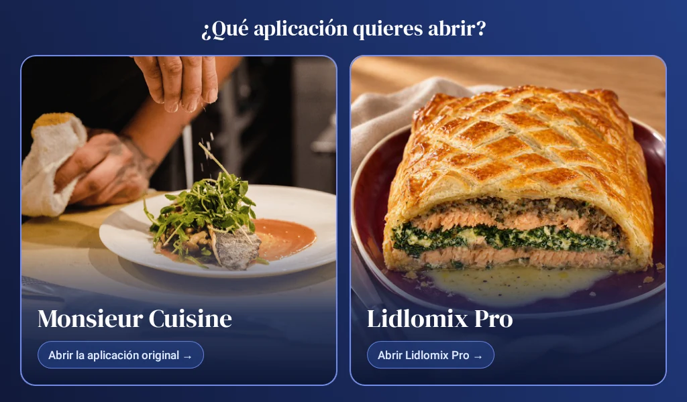
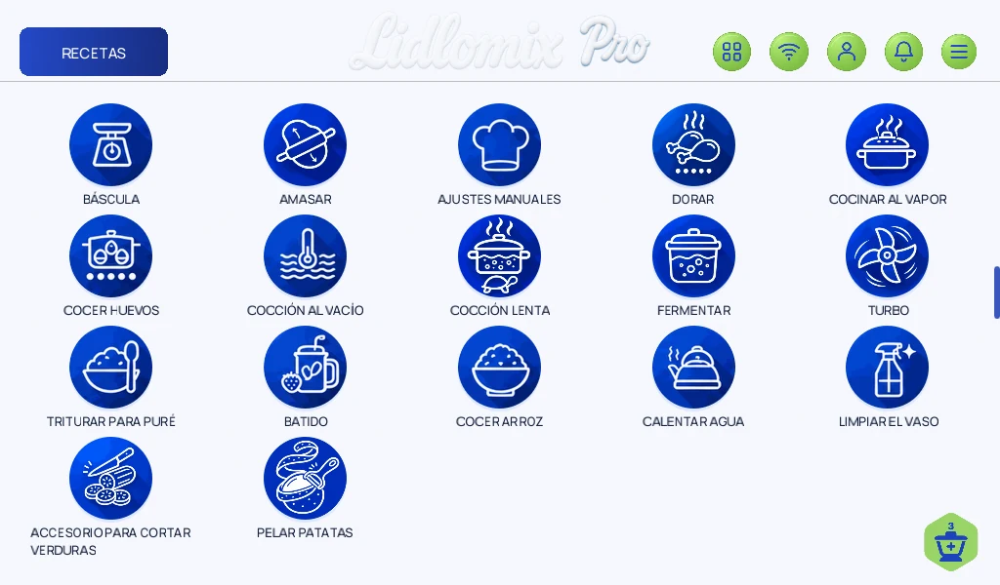

02 / Número 0.15 ·
Dos aplicaciones en el mismo Connect
Ya había empezado a escribir la aplicación, pero todavía no tenía forma de lanzarla en el robot. Encontré una pista en un video de alguien jugando en un Lidlomix.
El vídeo también mostró una manera de conectarse al dispositivo. Mi conexión siguió bajando durante el trabajo, así que tuve que empezar varias veces. Una vez que Pro estaba corriendo, quería mantener el acceso a la aplicación Monsieur Cuisine de la fábrica. Eso llevó a una pantalla de inicio con dos fichas. También lo probé después de un reinicio. Cómo me conecté a Android
1. Selección de aplicaciones

Al principio tuve que apagar el robot y en el interruptor para cambiar aplicaciones. Más tarde añadí un giro desde el derecho a volver al selector de la aplicación, así como una opción de reiniciar en el menú.
2. Menú Lidlomix Pro

He rediseñado los iconos del programa en el menú principal. El icono de la rodaja muestra verduras para que su propósito sea claro a un vistazo. Todavía estoy diseñando y añadiendo los iconos utilizados dentro de programas individuales.
3. Directorio Sin conexión

Cambiar el idioma en la aplicación de la fábrica también cambió qué recetas estaban disponibles. Reuní recetas de diferentes ediciones de país en un catálogo, las traduqué en polacos y removí duplicados. Mantuve variantes para los diferentes modelos y apliqué las pautas de configuración que había trabajado antes.
La prueba Connect muestra 8.613 recetas almacenadas en el dispositivo. Puedes buscar y abrir tarjetas de receta sin conexión. Los resultados vienen directamente de la base de datos local, sin esperar a descargar una receta.
4. Recetas de procedimientos personalizados
En la versión descrita, el catálogo Adaptadas para Pro contenía 6.203 recetas.